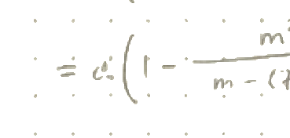
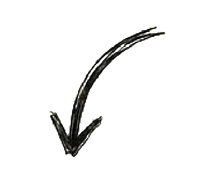

<template id="slide-05-template">
  <div id="slide-05" data-composition-id="slide-05" data-width="2868" data-height="1600">
    <div class="slide-stage">
      
      
      
      
      
      
    </div>
    <style>
      #slide-05 {
        position: relative;
        width: 2868px;
        height: 1600px;
        overflow: hidden;
        background: #050505;
      }
      #slide-05 .slide-stage {
        position: absolute;
        inset: 0;
        overflow: hidden;
      }
      #slide-05 .slide-bg {
        position: absolute;
        inset: 0;
        width: 100%;
        height: 100%;
        object-fit: cover;
        z-index: 1;
      }
      #slide-05 .slide-layer {
        position: absolute;
        object-fit: contain;
        will-change: transform, opacity;
      }
    </style>
    <script src="https://cdn.jsdelivr.net/npm/gsap@3.14.2/dist/gsap.min.js"></script>
    <script>
      window.__timelines = window.__timelines || {};
      const tl = gsap.timeline({ paused: true, defaults: { ease: 'power2.out' } });
      tl.from('.layer-01', { scale: 0.92, autoAlpha: 0, duration: 0.7, ease: 'power3.out' }, 0.20);
      tl.from('.layer-02', { x: -110, autoAlpha: 0, duration: 0.7, ease: 'power3.out' }, 0.45);
      tl.from('.layer-03', { y: 90, autoAlpha: 0, duration: 0.7, ease: 'power3.out' }, 0.70);
      tl.from('.layer-04', { y: 90, autoAlpha: 0, duration: 0.7, ease: 'power3.out' }, 0.95);
      tl.from('.layer-05', { y: 90, autoAlpha: 0, duration: 0.7, ease: 'power3.out' }, 1.20);
      window.__timelines["slide-05"] = tl;
    </script>
  </div>
</template>
